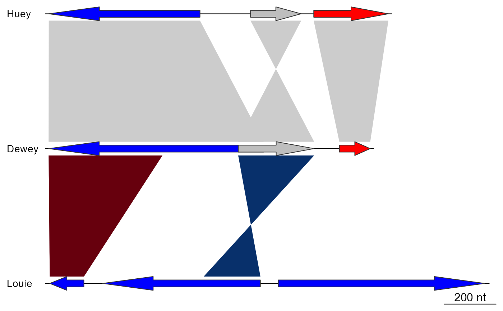
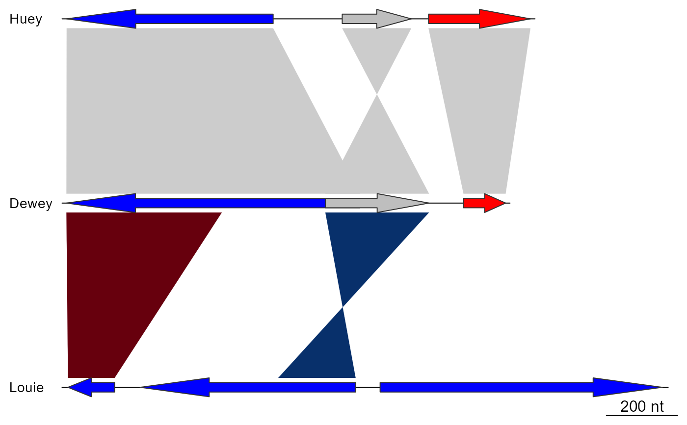

Plot gene and genome maps
plot_gene_map.RdThis plotting function represents linear DNA segments and comparisons between them. It will plot one line per DNA segment, eventually separated by the comparisons. In addition, a tree can be plotted on the left of the plot, as well annotations on each DNA segment. This function is based on the grid package, and as such the plots can be placed into other graphics or modified.
Usage
plot_gene_map(
dna_segs,
comparisons = NULL,
tree = NULL,
tree_width = NULL,
tree_branch_labels_cex = NULL,
tree_scale = FALSE,
legend_column = NULL,
legend_labels = NULL,
legend_colors = NULL,
annotations = NULL,
annotation_height = 0.1,
annotation_cex = 0.8,
seg_plots = NULL,
seg_plot_height = 3,
seg_plot_height_unit = "lines",
seg_plot_yaxis = 3,
seg_plot_yaxis_cex = scale_cex,
region_size = NULL,
xlims = NULL,
print_xlims = FALSE,
outfile_xlims = NULL,
offsets = NULL,
print_offsets = FALSE,
minimum_gap_size = 0.03,
fixed_gap_length = FALSE,
limit_to_longest_dna_seg = TRUE,
main = NULL,
main_pos = "centre",
dna_seg_labels = NULL,
dna_seg_label_cex = 0.9,
dna_seg_label_col = "black",
gene_type = NULL,
arrow_head_len = 200,
dna_seg_line = TRUE,
scale = TRUE,
dna_seg_scale = FALSE,
n_scale_ticks = 7,
scale_cex = 0.6,
global_color_scheme = NULL,
color_scheme_column = "auto",
color_scheme_colors = "auto",
color_scheme_dataset = "auto",
gradient_scheme_direction = "auto",
alpha_dna_segs = NULL,
alpha_comparisons = NULL,
plot_new = TRUE,
outfile = NULL,
outfile_format = "pdf",
outfile_height = "auto",
outfile_width = "auto",
debug = 0,
verbose = FALSE,
...
)Arguments
- dna_segs
A list of
dna_segobjects. Mandatory.- comparisons
A list of
comparisonobjects. If provided, they will plotted between thedna_segs. The number ofcomparisonsshould be 1 less than the number ofdna_segs.- tree
A tree, in the form of a phylog object. If provided, will be plotted on the left. See details.
- tree_width
A single numeric, giving the width of the tree area in the plot, in inches. By default it will take 20% of the total plotting area.
- tree_branch_labels_cex
A single numeric, giving a size multiplier for possible node annotations of the provided tree (if present).
- tree_scale
Logical. If
TRUE, plots a scale for the tree.- legend_column
A character string, must be either
"auto", or refer to the name of a column present in eachdna_seg. When provided, will attempt to create a plot legend based on the given column. See details.- legend_labels
A character vector of labels to display in the legend. See details.
- legend_colors
A character vector of colors to use for the legend, but only when
legend_labelsis provided. See details.- annotations
An
annotationor a list ofannotationobjects with the same length asdna_segs. If provided, plots annotations above thedna_seg(s).- annotation_height
A single numeric, giving the height reserved for plotting
annotations. For comparison, the height of adna_segis 1.- annotation_cex
A single numeric, giving a size multiplier for the annotations.
- seg_plots
A
seg_plotor a list ofseg_plotobjects with the same length asdna_segs. If provided, plots additional data above thedna_segs. See seg_plot for more information and some examples.- seg_plot_height
A single numeric, giving the height of the
seg_plotregions, measured in the unit provided byseg_plot_height_unit.- seg_plot_height_unit
The unit of the height of the
seg_plotregions. Must be a valid unit, see thegriddocumentation for more details. If this argument is set to"null", then the height will be calculated as a proportion of thecomparisonregion (i.e. 0.5 means theseg_plotregion will be half the size of acomparison).- seg_plot_yaxis
Can be
NULL,FALSEor a numeric. In the first two cases, no y-axis is drawn for theseg_plots. If numeric, an axis is drawn with approximately that number of ticks.- seg_plot_yaxis_cex
A single numeric, giving a size multiplier for the
seg_ploty-axis.- region_size
A single numeric or numeric vector with the same length as
dna_segs, providing the neighbourhood size to use for creating regional plots. Ignored ifxlimsare provided. See details.- xlims
A list with as many elements as there are
dna_segs, orNULL. IfNULL, the whole DNA segment will be represented. If a list is provided, each element of the list must be a numeric vector, representing pairs of left and right limits for each subsegment. See details.- print_xlims
Logical. If
TRUE, prints out thexlims(start and end coordinates of each subsegment of eachdna_seg).- outfile_xlims
A file path. If provided, the
xlims(start and end coordinates of each subsegment of eachdna_seg) are written to this file.- offsets
A list or numeric vector with the same length as
dna_segs, orNULL, giving the distance before and between subsegments. Each element of this list must be the same length as the number of subsegments (seexlimsand details). IfoffsetsisNULL, then the gaps are optimized to minimizecomparisonlength. See details.- print_offsets
Logical. If
TRUE, prints out theoffsets, the gap lengths between subsegments for eachdna_seg.- minimum_gap_size
A single numeric, giving the minimum gap size between subsegments, proportional to the plot region (e.g.
0.03means the width of the gaps will be at least 3% of the overall plot width).- fixed_gap_length
Logical. If
TRUE, then the gaps between subsegments will all have the same fixed length instead of optimizing the gap size to minimizecomparisonlength.- limit_to_longest_dna_seg
Logical. If
TRUE, restricts the plot width to the length of the longestdna_seg. IfFALSE, the sizes of the shorterdna_segscan be extended to better fit thecomparisons, but this can lead to extremely wide plots.- main
A character string that gives the main title of the plot.
- main_pos
A character string that gives the position of the plot title. Must be one of
"centre","left", or"right".- dna_seg_labels
A character vector with the same length as
dna_segs, orNULL. IfNULL, the names of thedna_segswill be determined automatically where possible (e.g. ifdna_segsis a named list). Labels are optional, but must be provided or findable if a tree is provided.- dna_seg_label_cex
A single numeric, giving a size multiplier for the
dna_seglabels.- dna_seg_label_col
A character vector, providing the color(s) for the
dna_seglabels. Must provide either 1 color or as many as there aredna_segs.- gene_type
A character string, determines the gene type (i.e. shape) of the features, overriding the
gene_typecolumn of thedna_segs. See gene_types.- arrow_head_len
A single numeric, giving the length of the arrow heads for the
"arrows"and"headless_arrows"gene types. At maximum, the arrow heads extend to half of the total length. Can be set toInfto force this behavior.- dna_seg_line
A vector, either logical or character, with a length of either 1 or the amount of
dna_segs. Determines whether a line should be drawn through the middle of eachdna_seg, and if so, what color. See details.- scale
Logical. If
TRUE, a scale will be displayed on the plot.- dna_seg_scale
A single logical that determines whether a scale should be drawn under each
dna_seg, or a logical vector of the same length asdna_segs, for making this choice for eachdna_segseparately.- n_scale_ticks
A single numeric, giving the approximate number of ticks to display on the longest segment.
- scale_cex
A single numeric, giving a size multiplier for the scale labels.
- global_color_scheme
A character string, adding a color scheme to the
dna_segsand/ orcomparisons. Must be one of:"uniform","gradient", or"sequential". See details.- color_scheme_column
A character string, must be either
"auto", or refer to the name of a column. Depending onglobal_color_scheme, the colors will be determined based on the values found in this column. See details.- color_scheme_colors
A color scheme. If
global_color_scheme = "gradient", then it must be one of:"red_blue","blue_red", or"gray". Ifglobal_color_scheme = "uniform", it can be a palette or vector of colors to use. See details.- color_scheme_dataset
A character string, a choice of which data to apply the color scheme to. Must be one of:
"auto","dna_segs", or"comparisons". If"auto", the color scheme will be applied to both, unless it is not possible to apply it to thecomparisons. Only applies whenglobal_color_schemeis"uniform"or"sequential".- gradient_scheme_direction
A character string, indicating the direction of the scale used in the gradient color scheme. Must be one of:
"increasing","decreasing", or"auto". See details.- alpha_dna_segs
A single numeric value between 0 and 1, or
NULL. Determines the transparency applied to thedna_segs, 0 being fully transparent, and 1 being fully opaque. This overrides any existing alpha values. IfNULL, no change is made.- alpha_comparisons
A single numeric value between 0 and 1, or
NULL. Determines the transparency applied to thecomparisons, 0 being fully transparent, and 1 being fully opaque. This overrides any existing alpha values. IfNULL, no change is made.- plot_new
Logical. If
TRUE, usesgrid.newpage()to produce a new plot. IfFALSE, integrates it on the current plot.- outfile
A file path. If provided, the plot will be saved to this file instead of the regular output.
- outfile_format
A character string, giving the file format for the saved plot
outfile. Must be one of:"pdf","png", or"bmp".- outfile_height
A single numeric, giving the height of the plot
outfilein inches, or"auto". If"auto", an appropriate height will be approximated automatically.- outfile_width
A single numeric, giving the width of the plot
outfilein inches, or"auto". If"auto", an appropriate width will be approximated automatically.- debug
A numeric. If larger than
0, only that number of elements will be plotted for eachdna_segandcomparison.- verbose
Logical. If
TRUE, reports the timing of various steps.- ...
Further arguments to be passed to user-defined graphical functions.
Value
A lattice graphic is plotted on the current device. The function
itself returns nothing (invisible NULL).
Details
One line is plotted per dna_seg. The shape of the dna_seg elements is
determined by the gene_type column, unless they are explicitly overwritten
using the gene_type argument. See gene_types for more details. When
provided, comparisons are placed
in between the dna_segs, annotations are displayed above each dna_seg,
and accompanying data for each dna_seg can be plotted using seg_plots
(see seg_plot for more details).
A phylogenetic tree (a phylog object from package ade4) can be drawn at
the left of the plot (see newick2phylog). The tree does not need to be
ordered in the same way as the dna_seg_labels, but a permutation of the
tree with that order should exist. If the tree is large, the number of
permutations can become too large, causing the function to stop
(>100000 permutations). The solution is then to provide dna_segs that are
ordered in the same manner as the tree labels, or vice-versa (see
permute_dna_segs). There is (experimental) support for branch annotations.
These are given in the Newick tree, directly after the parenthesis closing a
node. They can be characters or integers, but so far newick2phylog does
not support the . character in any labels. Tags will be ignored if they
start with "I", and trimmed if they start with "X".
There are two ways to draw a legend using this function:
The first is a
customizable legend, which can be drawn by providing a vector of labels to
the legend_labels argument and a vector of colors to link to these labels
to the legend_colors argument.
The other way is through the legend_column
argument, which must be "auto", or the name of a column present in each
dna_seg. If "auto", the column to use will be the same as the column
that was used for the "uniform" color scheme if this was applied, the
gene column if this was present, or finally the name column if neither
of the previous options are possible. The legend will take all possible
values for the chosen column, alongside the color of the first instance it
can find for each possible value. If legend_labels was provided, only
values found in that character vector are considered for the legend.
The xlims allow the user to plot subsegments of a dna_seg. xlims
consists of a list composed of as many numeric vectors as there are
dna_segs. Each of these numeric vectors give pairs of left and right
borders, and gives the direction. For example, c(1,2,6,4) will plot two
subsegments for a single dna_seg, the first subsegment will go from 1 to 2
which is plotted left to right and the second subsegment will go from 4 to 6,
plotted right to left. -Inf and Inf values are accepted. NULL values
will result in plotting the whole segment.
Alternatively, the region_size argument can be used to make regional plots
in a more automated fashion. Any dna_seg features with the value "TRUE"
in their region_plot column will be plotted and become the center of a
subsegment. Portions of the dna_seg to the left and right of these features
will be included and the size of these portions is determined by
region_size. Any overlapping subsegments will be merged, and features
marked as boundaries will end subsegments early (e.g. chromosome or contig
boundaries). Functions like edit_dna_segs can be used to alter which
features to focus on by altering the region_plot column, but dna_segs
can be altered in the same manner as data.table objects as well, see the
data.table package for more details.
offsets allows the user to define the placement of the subsegments
(as defined by xlims or region_size). If offsetsis a list, each element represents 1dna_segand must be a numeric vector giving gap sizes between the subsegments of thatdna_seg, including the first one (which will be the distance between the left border of the plot and the first subsegment). Each element of this list must be the same length as the number of subsegments (see xlimsand details). Ifoffsetsis a numeric vector, then those numbers will give the distance before the first subsegment for eachdna_seg, while the others gaps remain static. If offsetsis NULL, then the gaps are optimized to minimize comparison` length.
dna_seg_line determines whether a line should be drawn through each
dna_seg, and if so, what color. If only value is provided, then this
value will be repeated for each dna_seg. If dna_seg_line is a logical
vector, TRUE will default to drawing a black line for that dna_seg,
and FALSE will result in no line. If dna_seg_line is a character vector,
"FALSE" will still result in no line, but any other value will be
interpreted as a color choice for the line.
global_color_scheme applies a color scheme to the dna_segs and/or
comparisons, overriding the colors present in those objects. There are 3
options: "uniform","gradient", and "sequential". These color schemes
can be further customized using the other color scheme arguments.
"uniform": Applies a different color for each possible value of a given column (specified bycolor_scheme_column) from thedna_segsand/ orcomparisons(specified bycolor_scheme_dataset). Only the values for features shown in the plot are included. Thecolor_scheme_columnmust be a column present in alldna_segs(comparisonsare skipped if it is not present there). Ifcolor_scheme_column = "auto", it will determine which column to use, prioritizing column names related to orthology and groups, followed by thegenecolumn and finally thegene_typecolumn. The choice of colors is dependent on thecolor_scheme_colorsargument. This can be a color palette, or a character vector of colors recognizable by R. Ifcolor_scheme_colors = "auto", a palette will be chosen based on the amount of distinct colors that are required. See uniform_color_scheme for the function that is used to apply this color scheme."gradient": Applies a gradient color scheme to thecomparisonsbased on a numerical column (specified bycolor_scheme_column) that is present in all thecomparisons. The gradient is dependent oncolor_scheme_colors, which can be"red_blue","blue_red", or"gray"("auto"will default to"red_blue"). Ifcolor_scheme_column = "auto", it will determine which column to use, prioritizing column names that would be present if thecomparisonswere parsed from BLAST results. The direction of the gradient is dependent ongradient_scheme_direction, which should be"increasing"for variables that represent a relationship that increases as the numbers go up (e.g. bit score, alignment length),"decreasing"for variables that represent a relationship that decreases as the numbers go up (e.g. e-value, gaps, mismatches), or"auto", which will attempt to determine this automatically depending on the chosen column. See gradient_color_scheme for the function that is used to apply this color scheme."sequential": Transfers over any colors already present in thedna_segsandcomparisonsand copies them over to linked features. Features are linked through shared identifiers (specified bycolor_scheme_column) andcomparisonsthat connect them. See sequential_color_scheme for the function that is used to apply this color scheme.
See also
dna_seg and comparison for the base objects;
read_dna_seg_from_file, read_comparison_from_file, and
read_orthogroup_from_file to read from files; annotation to annotate
dna_segs; seg_plot to draw plots above dna_segs; gene_types for
gene_type argument; uniform_color_scheme, gradient_color_scheme, and
uniform_color_scheme for color schemes
Examples
old.par <- par(no.readonly = TRUE)
data("three_genes")
dna_segs <- three_genes$dna_segs
comparisons <- three_genes$comparisons
## Segments only
plot_gene_map(dna_segs = dna_segs)
## With comparisons
plot_gene_map(dna_segs = dna_segs, comparisons = comparisons)
## Tree
names <- c("A_aaa", "B_bbb", "C_ccc")
names(dna_segs) <- names
tree <- ade4::newick2phylog("(((A_aaa:4.2,B_bbb:3.9):3.1,C_ccc:7.3):1);")
plot_gene_map(dna_segs = dna_segs, comparisons = comparisons,
tree = tree)
## Increasing tree width
plot_gene_map(dna_segs = dna_segs, comparisons = comparisons,
tree = tree, tree_width = 3)
## Annotations on the tree
tree2 <- ade4::newick2phylog("(((A_aaa:4.2,B_bbb:3.9)97:3.1,C_ccc:7.3)78:1);")
plot_gene_map(dna_segs = dna_segs, comparisons = comparisons,
tree = tree2, tree_width = 3)
plot_gene_map(dna_segs = dna_segs, comparisons = comparisons,
tree = tree2, tree_width = 3, tree_branch_labels_cex = 0.6)
plot_gene_map(dna_segs = dna_segs, comparisons = comparisons,
tree = tree2, tree_width = 3, tree_branch_labels_cex = 0)
 ## Annotation
## Calculating middle positions
mid_pos <- middle(dna_segs[[1]])
# Create first annotation
annot1 <- annotation(x1 = mid_pos, text = dna_segs[[1]]$name)
plot_gene_map(dna_segs = dna_segs, comparisons = comparisons,
annotations = annot1)
## Exploring options
annot2 <- annotation(x1 = c(mid_pos[1], dna_segs[[1]]$end[2]),
x2 = c(NA, dna_segs[[1]]$end[3]),
text = c(dna_segs[[1]]$name[1], "region1"),
rot = c(30, 0), col = c("grey", "black"))
plot_gene_map(dna_segs = dna_segs, comparisons = comparisons,
annotations = annot2, annotation_height = 1.3)
## xlims
## Just reversing 1 segment
plot_gene_map(dna_segs, comparisons,
xlims = list(NULL, NULL, c(Inf,-Inf)),
dna_seg_scale = TRUE)
## Removing one gene
plot_gene_map(dna_segs, comparisons,
xlims = list(NULL, NULL, c(-Inf,2800)),
dna_seg_scale = TRUE)
## offsets
offsets <- c(0, 0, 0)
plot_gene_map(dna_segs = dna_segs, comparisons = comparisons,
offsets = offsets)
offsets <- c(200, 400, 0)
plot_gene_map(dna_segs = dna_segs, comparisons = comparisons,
offsets = offsets)
## main
plot_gene_map(dna_segs = dna_segs, comparisons = comparisons,
main = "Comparison of A, B and C")
## Annotation
## Calculating middle positions
mid_pos <- middle(dna_segs[[1]])
# Create first annotation
annot1 <- annotation(x1 = mid_pos, text = dna_segs[[1]]$name)
plot_gene_map(dna_segs = dna_segs, comparisons = comparisons,
annotations = annot1)
## Exploring options
annot2 <- annotation(x1 = c(mid_pos[1], dna_segs[[1]]$end[2]),
x2 = c(NA, dna_segs[[1]]$end[3]),
text = c(dna_segs[[1]]$name[1], "region1"),
rot = c(30, 0), col = c("grey", "black"))
plot_gene_map(dna_segs = dna_segs, comparisons = comparisons,
annotations = annot2, annotation_height = 1.3)
## xlims
## Just reversing 1 segment
plot_gene_map(dna_segs, comparisons,
xlims = list(NULL, NULL, c(Inf,-Inf)),
dna_seg_scale = TRUE)
## Removing one gene
plot_gene_map(dna_segs, comparisons,
xlims = list(NULL, NULL, c(-Inf,2800)),
dna_seg_scale = TRUE)
## offsets
offsets <- c(0, 0, 0)
plot_gene_map(dna_segs = dna_segs, comparisons = comparisons,
offsets = offsets)
offsets <- c(200, 400, 0)
plot_gene_map(dna_segs = dna_segs, comparisons = comparisons,
offsets = offsets)
## main
plot_gene_map(dna_segs = dna_segs, comparisons = comparisons,
main = "Comparison of A, B and C")
 plot_gene_map(dna_segs = dna_segs, comparisons = comparisons,
main = "Comparison of A, B and C", main_pos = "left")
## dna_seg_labels
plot_gene_map(dna_segs = dna_segs, comparisons = comparisons,
dna_seg_labels = c("Huey", "Dewey", "Louie"))

## dna_seg_labels size
plot_gene_map(dna_segs = dna_segs, comparisons = comparisons,
dna_seg_labels = c("Huey", "Dewey", "Louie"),
dna_seg_label_cex = 2)
## dna_seg_line
plot_gene_map(dna_segs = dna_segs, comparisons = comparisons,
dna_seg_line = c("FALSE", "red", grey(0.6)))
## gene_type
plot_gene_map(dna_segs = dna_segs, comparisons = comparisons,
gene_type = "side_blocks")
##
## From here on, using a bigger dataset from a 4-genome comparison
##
data("barto")
## Adding a tree
tree <- ade4::newick2phylog("(BB:2.5,(BG:1.8,(BH:1,BQ:0.8):1.9):3);")
## Showing only subsegments
xlims1 <- list(c(1380000, 1445000),
c(10000, 83000),
c(15000, 98000),
c(5000, 82000))
## Reducing dataset size for speed purpose
for (i in 1:length(barto$dna_segs)) {
barto$dna_segs[[i]] <- trim(barto$dna_segs[[i]], xlim = xlims1[[i]])
if (i < length(barto$dna_segs)) {
barto$comparisons[[i]] <- trim(barto$comparisons[[i]],
xlim1 = xlims1[[i]], xlims1[[i+1]])
}
}
plot_gene_map(barto$dna_segs, barto$comparisons, tree = tree,
xlims = xlims1,
dna_seg_scale = TRUE)
## Showing several subsegments per genome
xlims2 <- list(c(1445000, 1415000, 1380000, 1412000),
c( 10000, 45000, 50000, 83000, 90000, 120000),
c( 15000, 36000, 90000, 120000, 74000, 98000),
c( 5000, 82000))
plot_gene_map(barto$dna_segs, barto$comparisons, tree = tree,
xlims = xlims2,
dna_seg_scale = TRUE)
## Hand-made offsets: size of all gaps
offsets2 <- list(c(10000, 10000),
c(2000, 2000, 2000),
c(10000, 5000, 2000),
c(10000))
plot_gene_map(barto$dna_segs, barto$comparisons, tree = tree,
xlims = xlims2,
offsets = offsets2,
dna_seg_scale = TRUE)
plot_gene_map(dna_segs = dna_segs, comparisons = comparisons,
main = "Comparison of A, B and C", main_pos = "left")
## dna_seg_labels
plot_gene_map(dna_segs = dna_segs, comparisons = comparisons,
dna_seg_labels = c("Huey", "Dewey", "Louie"))

## dna_seg_labels size
plot_gene_map(dna_segs = dna_segs, comparisons = comparisons,
dna_seg_labels = c("Huey", "Dewey", "Louie"),
dna_seg_label_cex = 2)
## dna_seg_line
plot_gene_map(dna_segs = dna_segs, comparisons = comparisons,
dna_seg_line = c("FALSE", "red", grey(0.6)))
## gene_type
plot_gene_map(dna_segs = dna_segs, comparisons = comparisons,
gene_type = "side_blocks")
##
## From here on, using a bigger dataset from a 4-genome comparison
##
data("barto")
## Adding a tree
tree <- ade4::newick2phylog("(BB:2.5,(BG:1.8,(BH:1,BQ:0.8):1.9):3);")
## Showing only subsegments
xlims1 <- list(c(1380000, 1445000),
c(10000, 83000),
c(15000, 98000),
c(5000, 82000))
## Reducing dataset size for speed purpose
for (i in 1:length(barto$dna_segs)) {
barto$dna_segs[[i]] <- trim(barto$dna_segs[[i]], xlim = xlims1[[i]])
if (i < length(barto$dna_segs)) {
barto$comparisons[[i]] <- trim(barto$comparisons[[i]],
xlim1 = xlims1[[i]], xlims1[[i+1]])
}
}
plot_gene_map(barto$dna_segs, barto$comparisons, tree = tree,
xlims = xlims1,
dna_seg_scale = TRUE)
## Showing several subsegments per genome
xlims2 <- list(c(1445000, 1415000, 1380000, 1412000),
c( 10000, 45000, 50000, 83000, 90000, 120000),
c( 15000, 36000, 90000, 120000, 74000, 98000),
c( 5000, 82000))
plot_gene_map(barto$dna_segs, barto$comparisons, tree = tree,
xlims = xlims2,
dna_seg_scale = TRUE)
## Hand-made offsets: size of all gaps
offsets2 <- list(c(10000, 10000),
c(2000, 2000, 2000),
c(10000, 5000, 2000),
c(10000))
plot_gene_map(barto$dna_segs, barto$comparisons, tree = tree,
xlims = xlims2,
offsets = offsets2,
dna_seg_scale = TRUE)
 ## dna_seg_scale, global_color_scheme, size, number, color of dna_seg_scale,
## size of dna_seg_scale labels
plot_gene_map(barto$dna_segs, barto$comparisons, tree = tree,
xlims = xlims2,
dna_seg_scale = c(TRUE, FALSE, FALSE, TRUE),
scale = FALSE,
dna_seg_label_cex = 1.4,
dna_seg_label_col = c("black", "grey", "blue", "red"),
global_color_scheme = "gradient",
alpha_comparisons = 0.5,
n_scale_ticks = 3, scale_cex = 1)
##
## Exploring and modifying a previously plotted gene map plot
##
plot_gene_map(barto$dna_segs, barto$comparisons, tree = tree,
xlims = xlims2, offsets = offsets2, dna_seg_scale = TRUE)
## View viewports
current.vpTree()
#> viewport[ROOT]->(viewport[oma]->(viewport[oma_layout]->(viewport[frame]->(viewport[scale], viewport[tree_outer]->(viewport[tree]->(viewport[treeFrame]->(viewport[GRID.VP.28]->(viewport[GRID.VP.29]->(viewport[tree.branches]), viewport[GRID.VP.30]->(viewport[tree.labels]))))), viewport[plotarea_outer]->(viewport[plotarea]->(viewport[map]->(viewport[comparison.1], viewport[comparison.2], viewport[comparison.3], viewport[seg_plot.1], viewport[seg_plot.2], viewport[seg_plot.3], viewport[seg_plot.4], viewport[scale_and_dna_seg.1]->(viewport[dna_seg_scale.1.1], viewport[dna_seg_scale.1.2], viewport[dna_seg.1.1], viewport[gap.1.2], viewport[dna_seg.1.2]), viewport[scale_and_dna_seg.2]->(viewport[gap.2.2], viewport[gap.2.3], viewport[dna_seg_scale.2.1], viewport[dna_seg_scale.2.2], viewport[dna_seg_scale.2.3], viewport[dna_seg.2.1], viewport[dna_seg.2.2], viewport[dna_seg.2.3]), viewport[scale_and_dna_seg.3]->(viewport[gap.3.2], viewport[gap.3.3], viewport[dna_seg_scale.3.1], viewport[dna_seg_scale.3.2], viewport[dna_seg_scale.3.3], viewport[dna_seg.3.1], viewport[dna_seg.3.2], viewport[dna_seg.3.3]), viewport[scale_and_dna_seg.4]->(viewport[dna_seg_scale.4.1], viewport[dna_seg.4.1]))))))))
## Go down to one of the viewports, add an xaxis, go back up to root viewport
downViewport("dna_seg_scale.3.2")
grid.rect()
upViewport(0)
## Get all the names of the objects
grobNames <- getNames()
grobNames
#> [1] "scale.lines" "scale.text"
#> [3] "treeFrameGrob" "comp.1.25040-21726_19088-15776"
#> [5] "comp.1.25558-25124_26518-26949" "comp.1.19541-18419_12925-11803"
#> [7] "comp.1.21598-19601_15459-13476" "comp.1.35558-33382_29873-27712"
#> [9] "comp.1.12532-10305_4881-2940" "comp.1.40000-36942_36159-32854"
#> [11] "comp.1.15624-14302_7982-6657" "comp.1.74966-76597_48067-46436"
#> [13] "comp.1.76896-82000_44115-40880" "comp.1.55199-57926_73880-71591"
#> [15] "comp.1.60571-62403_66630-64777" "comp.1.63761-66025_61723-59478"
#> [17] "comp.1.58161-59998_68956-67139" "comp.2.26535-26976_22913-22468"
#> [19] "comp.2.15789-19101_19096-22411" "comp.2.11108-12916_14605-16412"
#> [21] "comp.2.19707-26434_29669-22932" "comp.2.2940-7994_10000-11958"
#> [23] "comp.2.70193-73880_75446-79414" "comp.2.67043-69624_72300-74913"
#> [25] "comp.2.59441-63139_68000-70027" "comp.2.64766-66753_70228-72220"
#> [27] "comp.3.10000-11958_14888-20248" "comp.3.18506-29685_26132-37312"
#> [29] "comp.3.14605-17097_23224-25708" "comp.3.12109-13758_20329-21989"
#> [31] "comp.3.84000-84067_73013-86844" "comp.3.84000-85263_82290-87000"
#> [33] "comp.3.70205-84067_73013-86844" "comp.3.79526-85263_82290-87000"
#> [35] "comp.3.68000-70083_69259-72991" "dna_seg_scale.1.1.lines"
#> [37] "dna_seg_scale.1.1.labels" "dna_seg_line.1.1"
#> [39] "seg.1.folC" "seg.1.BARBAKC583_1353"
#> [41] "seg.1.BARBAKC583_1354" "seg.1.BARBAKC583_1355"
#> [43] "seg.1.addB" "seg.1.addA"
#> [45] "seg.1.trx" "seg.1.prfC"
#> [47] "seg.1.lysK" "seg.1.argG"
#> [49] "seg.1.BARBAKC583_1363" "seg.1.BARBAKC583_1362"
#> [51] "seg.1.BARBAKC583_1364" "seg.1.ptsN"
#> [53] "seg.1.BARBAKC583_1366" "seg.1.BARBAKC583_1367"
#> [55] "seg.1.BARBAKC583_1368" "seg.1.BARBAKC583_1369"
#> [57] "seg.1.BARBAKC583_1370" "seg.1.ihfB"
#> [59] "seg.1.BARBAKC583_1372" "seg.1.BARBAKC583_1373"
#> [61] "seg.1.BARBAKC583_1374" "seg.1.lspA"
#> [63] "dna_seg_scale.1.2.lines" "dna_seg_scale.1.2.labels"
#> [65] "dna_seg_line.1.2" "seg.1.dnaJ"
#> [67] "seg.1.dnaK" "seg.1.BARBAKC583_1329"
#> [69] "seg.1.BARBAKC583_1330" "seg.1.BARBAKC583_1331"
#> [71] "seg.1.bvrR" "seg.1.bvrS"
#> [73] "seg.1.grpE" "seg.1.rdgB"
#> [75] "seg.1.BARBAKC583_1337" "seg.1.dapE"
#> [77] "seg.1.BARBAKC583_1339" "seg.1.BARBAKC583_1340"
#> [79] "seg.1.infC" "seg.1.BARBAKC583_1342"
#> [81] "seg.1.BARBAKC583_1343" "seg.1.BARBAKC583_1344"
#> [83] "seg.1.BARBAKC583_1345" "seg.1.gyrB"
#> [85] "seg.1.ubiE" "seg.1.ubiB"
#> [87] "gap.1.2" "dna_seg_scale.2.1.lines"
#> [89] "dna_seg_scale.2.1.labels" "dna_seg_line.2.1"
#> [91] "seg.2.Bgr_00100" "seg.2.Bgr_00110"
#> [93] "seg.2.Bgr_00120" "seg.2.Bgr_00130"
#> [95] "seg.2.Bgr_00140" "seg.2.Bgr_00150"
#> [97] "seg.2.Bgr_00160" "seg.2.ptsN"
#> [99] "seg.2.Bgr_00180" "seg.2.Bgr_00190"
#> [101] "seg.2.Bgr_00210" "seg.2.argG"
#> [103] "seg.2.lysS" "seg.2.prfC"
#> [105] "seg.2.addB" "seg.2.addA"
#> [107] "seg.2.trxA" "seg.2.Bgr_00280"
#> [109] "seg.2.Bgr_00290" "seg.2.ahcY"
#> [111] "seg.2.Bgr_00310" "seg.2.folC"
#> [113] "seg.2.accD" "seg.2.Bgr_00340"
#> [115] "dna_seg_scale.2.2.lines" "dna_seg_scale.2.2.labels"
#> [117] "dna_seg_line.2.2" "seg.2.gyrB"
#> [119] "seg.2.Bgr_00400" "seg.2.Bgr_00410"
#> [121] "seg.2.Bgr_00420" "seg.2.Bgr_00430"
#> [123] "seg.2.msbA" "seg.2.Bgr_00480"
#> [125] "seg.2.Bgr_00490" "seg.2.dapE"
#> [127] "seg.2.hemN" "seg.2.Bgr_00530"
#> [129] "seg.2.hrcA" "seg.2.grpE"
#> [131] "seg.2.Bgr_00560" "seg.2.ptsH"
#> [133] "seg.2.Bgr_00580" "seg.2.Bgr_00590"
#> [135] "seg.2.batS" "gap.2.2"
#> [137] "dna_seg_scale.2.3.lines" "dna_seg_scale.2.3.labels"
#> [139] "dna_seg_line.2.3" "gap.2.3"
#> [141] "dna_seg_scale.3.1.lines" "dna_seg_scale.3.1.labels"
#> [143] "dna_seg_line.3.1" "seg.3.BH00160"
#> [145] "seg.3.BH00170" "seg.3.ptsN"
#> [147] "seg.3.BH00190" "seg.3.BH00200"
#> [149] "seg.3.BH00210" "seg.3.lysK"
#> [151] "seg.3.prfC" "seg.3.trxA"
#> [153] "seg.3.addA" "seg.3.BH00280"
#> [155] "dna_seg_scale.3.2.lines" "dna_seg_scale.3.2.labels"
#> [157] "dna_seg_line.3.2" "seg.3.argB"
#> [159] "seg.3.BH00700" "gap.3.2"
#> [161] "dna_seg_scale.3.3.lines" "dna_seg_scale.3.3.labels"
#> [163] "dna_seg_line.3.3" "seg.3.dapE"
#> [165] "seg.3.hemN" "seg.3.BH00540"
#> [167] "seg.3.hrcA" "seg.3.grpE"
#> [169] "seg.3.BH00570" "seg.3.ptsH"
#> [171] "seg.3.BH00590" "seg.3.hprK"
#> [173] "seg.3.batS" "seg.3.batR"
#> [175] "seg.3.BH00630" "seg.3.BH00640"
#> [177] "seg.3.dnaK" "seg.3.dnaJ1"
#> [179] "seg.3.argB" "seg.3.BH00700"
#> [181] "gap.3.3" "dna_seg_scale.4.1.lines"
#> [183] "dna_seg_scale.4.1.labels" "dna_seg_line.4.1"
#> [185] "seg.4.BQ00070" "seg.4.BQ00080"
#> [187] "seg.4.lspA" "seg.4.BQ00100"
#> [189] "seg.4.BQ00120" "seg.4.ihfB"
#> [191] "seg.4.BQ00140" "seg.4.BQ00150"
#> [193] "seg.4.BQ00160" "seg.4.ptsN"
#> [195] "seg.4.BQ00180" "seg.4.BQ00190"
#> [197] "seg.4.lysK" "seg.4.prfC"
#> [199] "seg.4.trxA" "seg.4.addA"
#> [201] "seg.4.BQ00260" "seg.4.BQ00270"
#> [203] "seg.4.BQ00280" "seg.4.ahcY"
#> [205] "seg.4.BQ00300" "seg.4.folC"
#> [207] "seg.4.accD" "seg.4.dfp"
#> [209] "seg.4.aarF" "seg.4.ubiE"
#> [211] "seg.4.gyrB" "seg.4.BQ00380"
#> [213] "seg.4.comM" "seg.4.BQ00400"
#> [215] "seg.4.BQ00410" "seg.4.msbA"
#> [217] "seg.4.infC" "seg.4.BQ00440"
#> [219] "seg.4.BQ00450" "seg.4.dapE"
#> [221] "seg.4.hemN" "seg.4.BQ00480"
#> [223] "seg.4.hrcA" "seg.4.grpE"
#> [225] "seg.4.BQ00510" "seg.4.ptsH"
#> [227] "seg.4.BQ00530" "seg.4.BQ00540"
#> [229] "seg.4.BQ00550" "seg.4.BQ00560"
#> [231] "seg.4.BQ00570" "seg.4.BQ00580"
#> [233] "seg.4.dnaK" "GRID.rect.53"
## Change the color of the scale line
grid.edit("scale.lines", gp = gpar(col = "grey"))
## Remove first dna_seg_lines
grid.remove("dna_seg_line.1.1")
##
## Plot genoPlotR logo
##
col_vec <- c("#B2182B", "#D6604D", "#F4A582", "#FDDBC7",
"#D1E5F0", "#92C5DE", "#4393C3", "#2166AC")
cex <- 2.3
## First segment
start1 <- c(150, 390, 570, 270, 530)
end1 <- c( 1, 490, 690, 270, 530)
## Second segment
start2 <- c(100, 520, 550, 330)
end2 <- c(240, 420, 650, 330)
## dna_segs
ds1 <- as.dna_seg(data.frame(name = c("", "", "", "geno", "R"),
start = start1, end = end1, strand = rep(1, 5),
fill = col_vec[c(2, 6, 1, 8, 9)]
))
ds_genoR <- edit_dna_segs(ds1, ids = data.frame(id = c("geno", "R"),
cex = c(2.3, 2.3),
gene_type = c("text", "text")
))
ds2 <- as.dna_seg(data.frame(name = c("", "", "", "Plot"),
start = start2, end = end2,
strand = rep(1, 4),
fill = col_vec[c(5, 3, 7, 1)]
))
ds_Plot <- edit_dna_segs(ds2, ids = data.frame(id = "Plot",
cex = 2.3,
gene_type = "text"
))
## comparison
c1 <- as.comparison(data.frame(start1 = start1[1:3], end1 = end1[1:3],
start2 = start2[1:3], end2 = end2[1:3],
fill = grey(c(0.6, 0.8, 0.5))))
## Generate genoPlotR logo
if (FALSE) {
pdf("logo.pdf", h = 0.7, w = 3)
}
par(fin = c(0.7, 3))
plot_gene_map(dna_segs = list(ds_genoR, ds_Plot),
comparisons = list(c1), scale = FALSE, dna_seg_scale = FALSE,
dna_seg_line = grey(0.7), offsets = c(-20,160))
if (FALSE) {
dev.off()
}
par(old.par)
## dna_seg_scale, global_color_scheme, size, number, color of dna_seg_scale,
## size of dna_seg_scale labels
plot_gene_map(barto$dna_segs, barto$comparisons, tree = tree,
xlims = xlims2,
dna_seg_scale = c(TRUE, FALSE, FALSE, TRUE),
scale = FALSE,
dna_seg_label_cex = 1.4,
dna_seg_label_col = c("black", "grey", "blue", "red"),
global_color_scheme = "gradient",
alpha_comparisons = 0.5,
n_scale_ticks = 3, scale_cex = 1)
##
## Exploring and modifying a previously plotted gene map plot
##
plot_gene_map(barto$dna_segs, barto$comparisons, tree = tree,
xlims = xlims2, offsets = offsets2, dna_seg_scale = TRUE)
## View viewports
current.vpTree()
#> viewport[ROOT]->(viewport[oma]->(viewport[oma_layout]->(viewport[frame]->(viewport[scale], viewport[tree_outer]->(viewport[tree]->(viewport[treeFrame]->(viewport[GRID.VP.28]->(viewport[GRID.VP.29]->(viewport[tree.branches]), viewport[GRID.VP.30]->(viewport[tree.labels]))))), viewport[plotarea_outer]->(viewport[plotarea]->(viewport[map]->(viewport[comparison.1], viewport[comparison.2], viewport[comparison.3], viewport[seg_plot.1], viewport[seg_plot.2], viewport[seg_plot.3], viewport[seg_plot.4], viewport[scale_and_dna_seg.1]->(viewport[dna_seg_scale.1.1], viewport[dna_seg_scale.1.2], viewport[dna_seg.1.1], viewport[gap.1.2], viewport[dna_seg.1.2]), viewport[scale_and_dna_seg.2]->(viewport[gap.2.2], viewport[gap.2.3], viewport[dna_seg_scale.2.1], viewport[dna_seg_scale.2.2], viewport[dna_seg_scale.2.3], viewport[dna_seg.2.1], viewport[dna_seg.2.2], viewport[dna_seg.2.3]), viewport[scale_and_dna_seg.3]->(viewport[gap.3.2], viewport[gap.3.3], viewport[dna_seg_scale.3.1], viewport[dna_seg_scale.3.2], viewport[dna_seg_scale.3.3], viewport[dna_seg.3.1], viewport[dna_seg.3.2], viewport[dna_seg.3.3]), viewport[scale_and_dna_seg.4]->(viewport[dna_seg_scale.4.1], viewport[dna_seg.4.1]))))))))
## Go down to one of the viewports, add an xaxis, go back up to root viewport
downViewport("dna_seg_scale.3.2")
grid.rect()
upViewport(0)
## Get all the names of the objects
grobNames <- getNames()
grobNames
#> [1] "scale.lines" "scale.text"
#> [3] "treeFrameGrob" "comp.1.25040-21726_19088-15776"
#> [5] "comp.1.25558-25124_26518-26949" "comp.1.19541-18419_12925-11803"
#> [7] "comp.1.21598-19601_15459-13476" "comp.1.35558-33382_29873-27712"
#> [9] "comp.1.12532-10305_4881-2940" "comp.1.40000-36942_36159-32854"
#> [11] "comp.1.15624-14302_7982-6657" "comp.1.74966-76597_48067-46436"
#> [13] "comp.1.76896-82000_44115-40880" "comp.1.55199-57926_73880-71591"
#> [15] "comp.1.60571-62403_66630-64777" "comp.1.63761-66025_61723-59478"
#> [17] "comp.1.58161-59998_68956-67139" "comp.2.26535-26976_22913-22468"
#> [19] "comp.2.15789-19101_19096-22411" "comp.2.11108-12916_14605-16412"
#> [21] "comp.2.19707-26434_29669-22932" "comp.2.2940-7994_10000-11958"
#> [23] "comp.2.70193-73880_75446-79414" "comp.2.67043-69624_72300-74913"
#> [25] "comp.2.59441-63139_68000-70027" "comp.2.64766-66753_70228-72220"
#> [27] "comp.3.10000-11958_14888-20248" "comp.3.18506-29685_26132-37312"
#> [29] "comp.3.14605-17097_23224-25708" "comp.3.12109-13758_20329-21989"
#> [31] "comp.3.84000-84067_73013-86844" "comp.3.84000-85263_82290-87000"
#> [33] "comp.3.70205-84067_73013-86844" "comp.3.79526-85263_82290-87000"
#> [35] "comp.3.68000-70083_69259-72991" "dna_seg_scale.1.1.lines"
#> [37] "dna_seg_scale.1.1.labels" "dna_seg_line.1.1"
#> [39] "seg.1.folC" "seg.1.BARBAKC583_1353"
#> [41] "seg.1.BARBAKC583_1354" "seg.1.BARBAKC583_1355"
#> [43] "seg.1.addB" "seg.1.addA"
#> [45] "seg.1.trx" "seg.1.prfC"
#> [47] "seg.1.lysK" "seg.1.argG"
#> [49] "seg.1.BARBAKC583_1363" "seg.1.BARBAKC583_1362"
#> [51] "seg.1.BARBAKC583_1364" "seg.1.ptsN"
#> [53] "seg.1.BARBAKC583_1366" "seg.1.BARBAKC583_1367"
#> [55] "seg.1.BARBAKC583_1368" "seg.1.BARBAKC583_1369"
#> [57] "seg.1.BARBAKC583_1370" "seg.1.ihfB"
#> [59] "seg.1.BARBAKC583_1372" "seg.1.BARBAKC583_1373"
#> [61] "seg.1.BARBAKC583_1374" "seg.1.lspA"
#> [63] "dna_seg_scale.1.2.lines" "dna_seg_scale.1.2.labels"
#> [65] "dna_seg_line.1.2" "seg.1.dnaJ"
#> [67] "seg.1.dnaK" "seg.1.BARBAKC583_1329"
#> [69] "seg.1.BARBAKC583_1330" "seg.1.BARBAKC583_1331"
#> [71] "seg.1.bvrR" "seg.1.bvrS"
#> [73] "seg.1.grpE" "seg.1.rdgB"
#> [75] "seg.1.BARBAKC583_1337" "seg.1.dapE"
#> [77] "seg.1.BARBAKC583_1339" "seg.1.BARBAKC583_1340"
#> [79] "seg.1.infC" "seg.1.BARBAKC583_1342"
#> [81] "seg.1.BARBAKC583_1343" "seg.1.BARBAKC583_1344"
#> [83] "seg.1.BARBAKC583_1345" "seg.1.gyrB"
#> [85] "seg.1.ubiE" "seg.1.ubiB"
#> [87] "gap.1.2" "dna_seg_scale.2.1.lines"
#> [89] "dna_seg_scale.2.1.labels" "dna_seg_line.2.1"
#> [91] "seg.2.Bgr_00100" "seg.2.Bgr_00110"
#> [93] "seg.2.Bgr_00120" "seg.2.Bgr_00130"
#> [95] "seg.2.Bgr_00140" "seg.2.Bgr_00150"
#> [97] "seg.2.Bgr_00160" "seg.2.ptsN"
#> [99] "seg.2.Bgr_00180" "seg.2.Bgr_00190"
#> [101] "seg.2.Bgr_00210" "seg.2.argG"
#> [103] "seg.2.lysS" "seg.2.prfC"
#> [105] "seg.2.addB" "seg.2.addA"
#> [107] "seg.2.trxA" "seg.2.Bgr_00280"
#> [109] "seg.2.Bgr_00290" "seg.2.ahcY"
#> [111] "seg.2.Bgr_00310" "seg.2.folC"
#> [113] "seg.2.accD" "seg.2.Bgr_00340"
#> [115] "dna_seg_scale.2.2.lines" "dna_seg_scale.2.2.labels"
#> [117] "dna_seg_line.2.2" "seg.2.gyrB"
#> [119] "seg.2.Bgr_00400" "seg.2.Bgr_00410"
#> [121] "seg.2.Bgr_00420" "seg.2.Bgr_00430"
#> [123] "seg.2.msbA" "seg.2.Bgr_00480"
#> [125] "seg.2.Bgr_00490" "seg.2.dapE"
#> [127] "seg.2.hemN" "seg.2.Bgr_00530"
#> [129] "seg.2.hrcA" "seg.2.grpE"
#> [131] "seg.2.Bgr_00560" "seg.2.ptsH"
#> [133] "seg.2.Bgr_00580" "seg.2.Bgr_00590"
#> [135] "seg.2.batS" "gap.2.2"
#> [137] "dna_seg_scale.2.3.lines" "dna_seg_scale.2.3.labels"
#> [139] "dna_seg_line.2.3" "gap.2.3"
#> [141] "dna_seg_scale.3.1.lines" "dna_seg_scale.3.1.labels"
#> [143] "dna_seg_line.3.1" "seg.3.BH00160"
#> [145] "seg.3.BH00170" "seg.3.ptsN"
#> [147] "seg.3.BH00190" "seg.3.BH00200"
#> [149] "seg.3.BH00210" "seg.3.lysK"
#> [151] "seg.3.prfC" "seg.3.trxA"
#> [153] "seg.3.addA" "seg.3.BH00280"
#> [155] "dna_seg_scale.3.2.lines" "dna_seg_scale.3.2.labels"
#> [157] "dna_seg_line.3.2" "seg.3.argB"
#> [159] "seg.3.BH00700" "gap.3.2"
#> [161] "dna_seg_scale.3.3.lines" "dna_seg_scale.3.3.labels"
#> [163] "dna_seg_line.3.3" "seg.3.dapE"
#> [165] "seg.3.hemN" "seg.3.BH00540"
#> [167] "seg.3.hrcA" "seg.3.grpE"
#> [169] "seg.3.BH00570" "seg.3.ptsH"
#> [171] "seg.3.BH00590" "seg.3.hprK"
#> [173] "seg.3.batS" "seg.3.batR"
#> [175] "seg.3.BH00630" "seg.3.BH00640"
#> [177] "seg.3.dnaK" "seg.3.dnaJ1"
#> [179] "seg.3.argB" "seg.3.BH00700"
#> [181] "gap.3.3" "dna_seg_scale.4.1.lines"
#> [183] "dna_seg_scale.4.1.labels" "dna_seg_line.4.1"
#> [185] "seg.4.BQ00070" "seg.4.BQ00080"
#> [187] "seg.4.lspA" "seg.4.BQ00100"
#> [189] "seg.4.BQ00120" "seg.4.ihfB"
#> [191] "seg.4.BQ00140" "seg.4.BQ00150"
#> [193] "seg.4.BQ00160" "seg.4.ptsN"
#> [195] "seg.4.BQ00180" "seg.4.BQ00190"
#> [197] "seg.4.lysK" "seg.4.prfC"
#> [199] "seg.4.trxA" "seg.4.addA"
#> [201] "seg.4.BQ00260" "seg.4.BQ00270"
#> [203] "seg.4.BQ00280" "seg.4.ahcY"
#> [205] "seg.4.BQ00300" "seg.4.folC"
#> [207] "seg.4.accD" "seg.4.dfp"
#> [209] "seg.4.aarF" "seg.4.ubiE"
#> [211] "seg.4.gyrB" "seg.4.BQ00380"
#> [213] "seg.4.comM" "seg.4.BQ00400"
#> [215] "seg.4.BQ00410" "seg.4.msbA"
#> [217] "seg.4.infC" "seg.4.BQ00440"
#> [219] "seg.4.BQ00450" "seg.4.dapE"
#> [221] "seg.4.hemN" "seg.4.BQ00480"
#> [223] "seg.4.hrcA" "seg.4.grpE"
#> [225] "seg.4.BQ00510" "seg.4.ptsH"
#> [227] "seg.4.BQ00530" "seg.4.BQ00540"
#> [229] "seg.4.BQ00550" "seg.4.BQ00560"
#> [231] "seg.4.BQ00570" "seg.4.BQ00580"
#> [233] "seg.4.dnaK" "GRID.rect.53"
## Change the color of the scale line
grid.edit("scale.lines", gp = gpar(col = "grey"))
## Remove first dna_seg_lines
grid.remove("dna_seg_line.1.1")
##
## Plot genoPlotR logo
##
col_vec <- c("#B2182B", "#D6604D", "#F4A582", "#FDDBC7",
"#D1E5F0", "#92C5DE", "#4393C3", "#2166AC")
cex <- 2.3
## First segment
start1 <- c(150, 390, 570, 270, 530)
end1 <- c( 1, 490, 690, 270, 530)
## Second segment
start2 <- c(100, 520, 550, 330)
end2 <- c(240, 420, 650, 330)
## dna_segs
ds1 <- as.dna_seg(data.frame(name = c("", "", "", "geno", "R"),
start = start1, end = end1, strand = rep(1, 5),
fill = col_vec[c(2, 6, 1, 8, 9)]
))
ds_genoR <- edit_dna_segs(ds1, ids = data.frame(id = c("geno", "R"),
cex = c(2.3, 2.3),
gene_type = c("text", "text")
))
ds2 <- as.dna_seg(data.frame(name = c("", "", "", "Plot"),
start = start2, end = end2,
strand = rep(1, 4),
fill = col_vec[c(5, 3, 7, 1)]
))
ds_Plot <- edit_dna_segs(ds2, ids = data.frame(id = "Plot",
cex = 2.3,
gene_type = "text"
))
## comparison
c1 <- as.comparison(data.frame(start1 = start1[1:3], end1 = end1[1:3],
start2 = start2[1:3], end2 = end2[1:3],
fill = grey(c(0.6, 0.8, 0.5))))
## Generate genoPlotR logo
if (FALSE) {
pdf("logo.pdf", h = 0.7, w = 3)
}
par(fin = c(0.7, 3))
plot_gene_map(dna_segs = list(ds_genoR, ds_Plot),
comparisons = list(c1), scale = FALSE, dna_seg_scale = FALSE,
dna_seg_line = grey(0.7), offsets = c(-20,160))
if (FALSE) {
dev.off()
}
par(old.par)